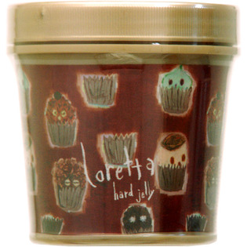

返回列表
产品名称：ロレッタ ハードゼリー

モルトベーネ ロレッタ ハードゼリー ３００ｇ
メーカー モルトベーネ
JANコード 4961503571991
商品の特徴
どんなスタイルも即キープ。リスタイリングも可能でべたつかない、ウォーターベースゼリーです。
成分・分量
水、エタノール、BG、（アクリル酸アルキル／ジアセトンアクリルアミド）コポリマーAMP、TEA、カルボマー、ダマスクバラ花油、ハチミツエキス、ローヤルゼリーエキス、フェノキシエタノール、PEG-40水添ヒマシ油、EDTA-2Na、オキシベンゾン-4、メチルイソチアゾリノン、PG、香料
用法及び用量
＜使用方法＞
適量を指先や手のひらにとり、髪になじませスタイリングします。